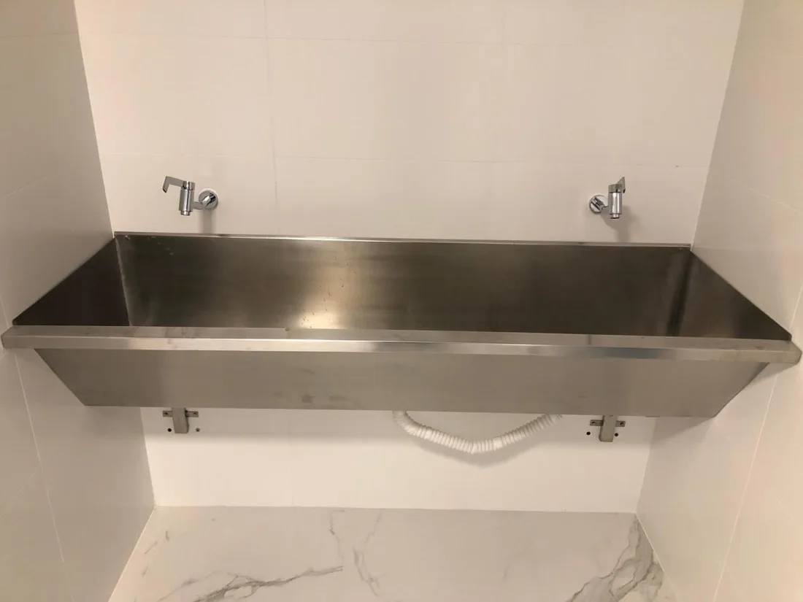
Lavagem e preparoPias em inox
Pias dimensionadas para a área de lavagem ou preparo, conforme as medidas do seu projeto.
Inox sob medida
Pias, bancadas, coifas e equipamentos para cozinhas profissionais, indústrias e projetos arquitetônicos.
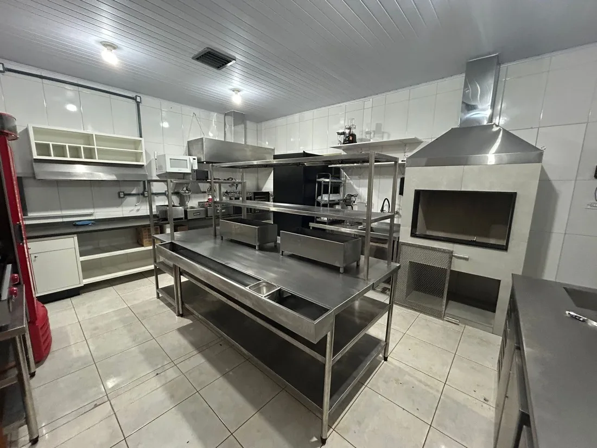
Escolha o seu equipamento
Encontre o produto, veja a aplicação e peça uma cotação com as medidas do seu espaço.
12 produtos exibidos

Lavagem e preparoPias dimensionadas para a área de lavagem ou preparo, conforme as medidas do seu projeto.
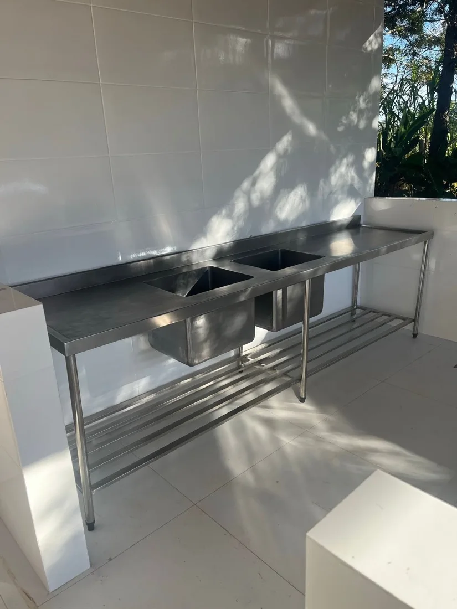
Apoio e manipulaçãoSuperfícies de apoio para preparo, manipulação e organização de cozinhas e áreas de trabalho.
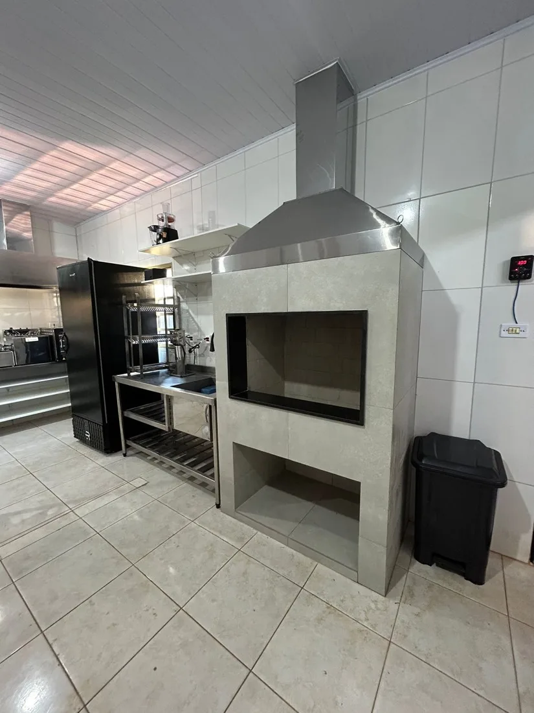
Cocção e exaustãoCoifas para cozinhas profissionais, churrasqueiras e áreas gourmet, conforme a aplicação.
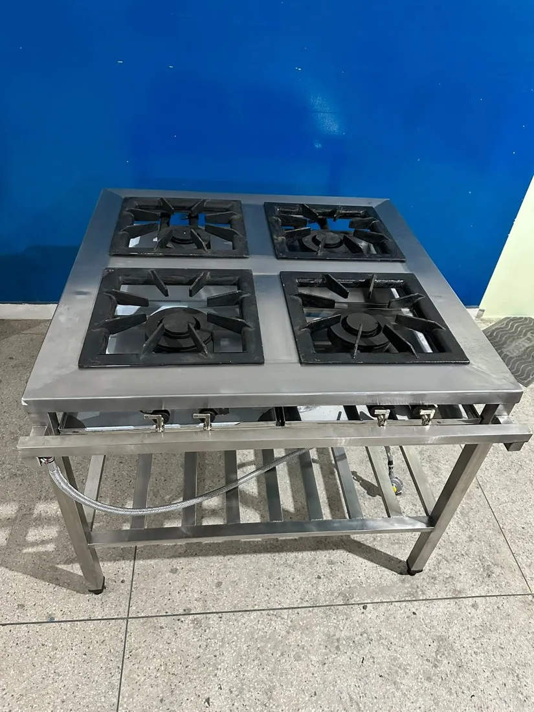
Cozinha profissionalEquipamentos para a cocção em cozinhas profissionais. Consulte modelos e configurações.
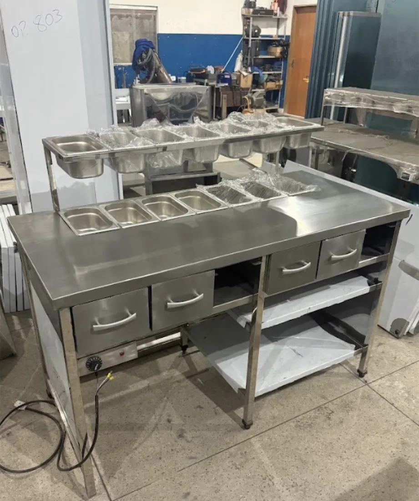
Preparo e finalizaçãoEstações de trabalho para reunir etapas de preparo, montagem e apoio à operação.
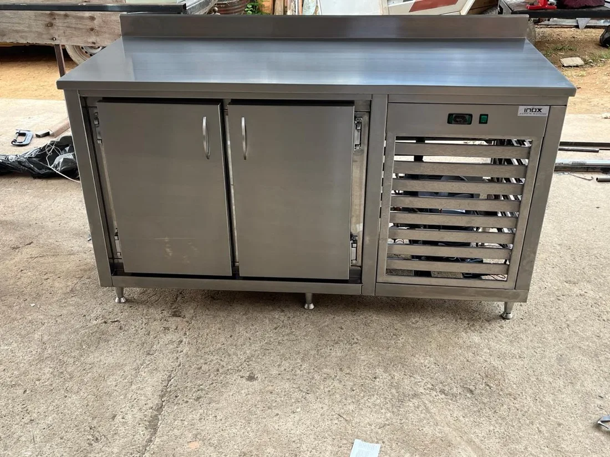
RefrigeraçãoRefrigeração e superfície de apoio em um equipamento. Configuração definida no orçamento.
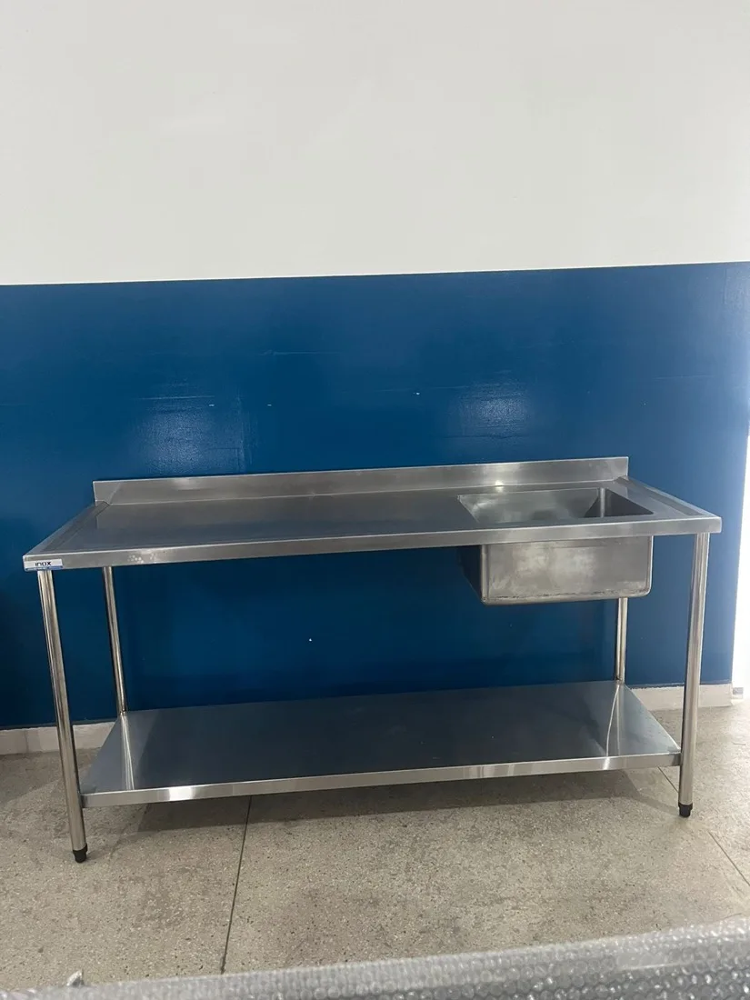
Preparo e lavagemBancada e cuba integradas para áreas de apoio e lavagem em projetos comerciais ou residenciais.
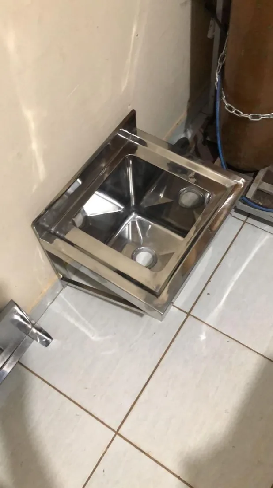
Lavagem profissionalCubas em inox para áreas de lavagem. Medidas e características definidas conforme a utilização.
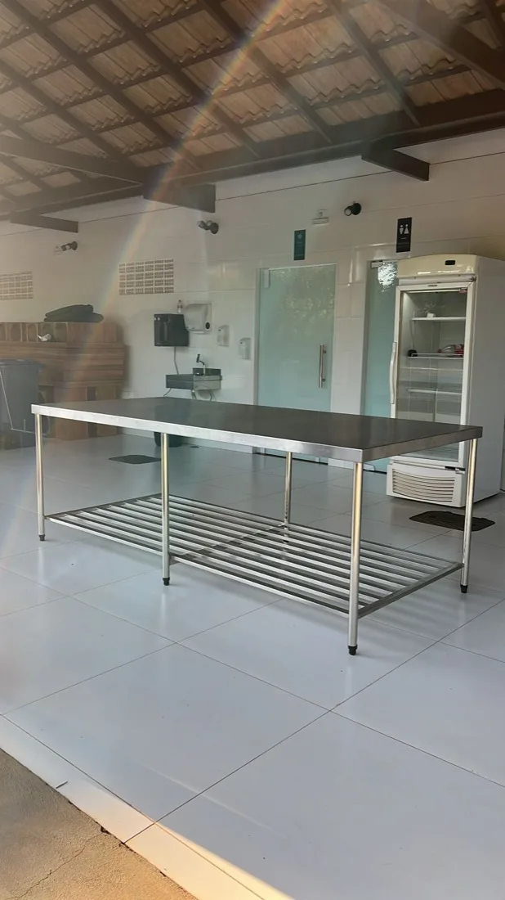
Superfície de trabalhoMesas de apoio para diferentes etapas de produção e organização do ambiente.
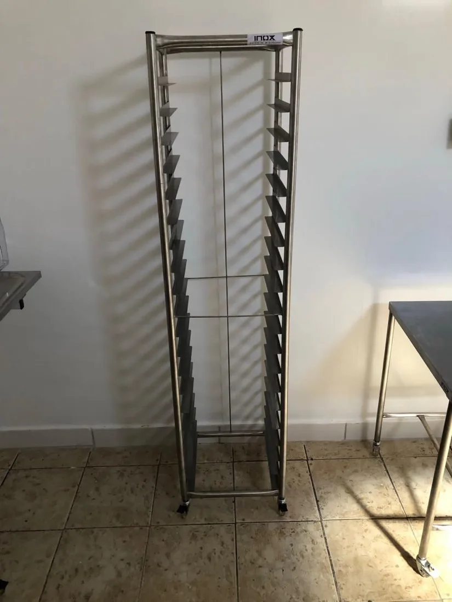
Transporte e organizaçãoEstruturas para organização e movimentação interna. Consulte dimensões e configuração.
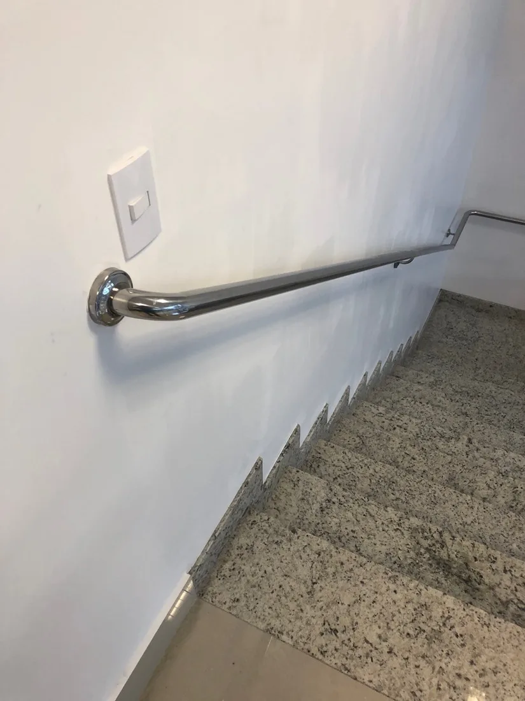
Adaptações PCDSoluções para escadas e rampas, desenvolvidas de acordo com as características do projeto.
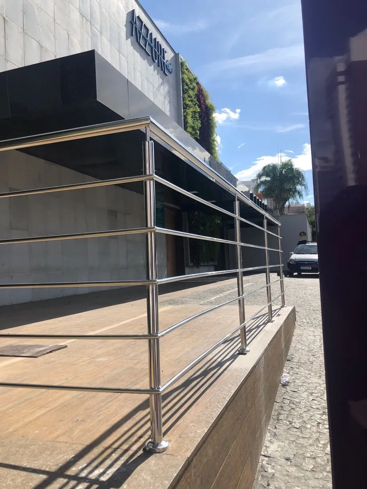
Adaptações PCDPeças para projetos arquitetônicos. Especificações e instalação devem ser definidas com a equipe.
Também sob consulta
Equipamentos para operações que precisam manter alimentos aquecidos durante o serviço. Consulte a configuração para seu projeto.
Envie uma foto, uma referência ou as medidas. A equipe avalia a possibilidade de fabricação.
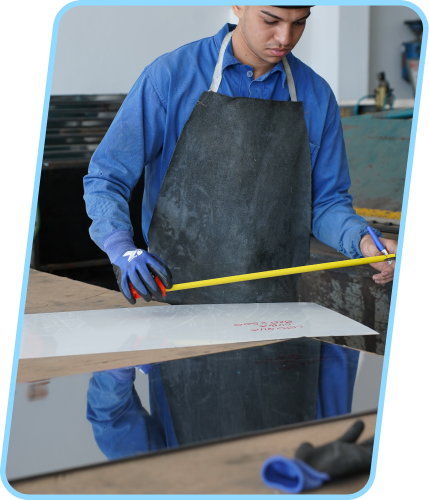
Fabricação conforme as medidas e a aplicação.
Sob medida, do início à instalação
Uma área de preparo, uma cozinha completa ou uma peça específica. A configuração parte do que você precisa produzir, organizar ou instalar.
Dimensões, configuração e especificações alinhadas antes da fabricação.
Consulte o atendimento para sua cidade e inclua o escopo de instalação no orçamento.
Restaurantes, bares, supermercados, indústrias, construção civil e áreas gourmet.
Da ideia à fabricação
Não precisa ter um projeto completo para começar a conversa.
Produto, cidade e medidas aproximadas. Se tiver, envie fotos ou a planta pelo WhatsApp.
A equipe avalia o uso e define com você as características, o escopo e as condições.
Confirme especificações, prazo, entrega e instalação antes de aprovar a fabricação.
Multiforme Inox
A Multiforme Inox desenvolve e comercializa produtos em aço inoxidável. Trabalha com peças sob medida para projetos comerciais, industriais e residenciais.
Conheça a empresaQuem já contratou a Multiforme
Veja os relatos enviados à nossa equipe pelo WhatsApp.
Antes de pedir sua cotação
Informações para preparar seu orçamento e alinhar as características do projeto.
Tirar uma dúvida pelo WhatsAppA Multiforme Inox trabalha com pias, bancadas, cubas, coifas, fogões industriais, mesas, ilhas de montagem, balcões refrigerados, carrinhos esqueleto, corrimãos, guarda-corpos e pistas quentes. A disponibilidade e as configurações são consultadas com a equipe.
Sim. A Multiforme desenvolve peças sob medida conforme o espaço e a aplicação. Envie o produto desejado, as medidas disponíveis e a cidade do projeto para iniciar a análise.
O valor depende das dimensões, da configuração, do material especificado e dos serviços incluídos. A cotação é preparada após a avaliação dessas informações pela equipe.
A Multiforme oferece instalação no local conforme o projeto contratado. Confirme com a equipe a disponibilidade para sua cidade, o escopo, o frete e as condições de instalação.
A empresa fica na Rua Ipanema, quadra 09, lote 02, Jardim Ipiranga, Goiás. O atendimento também é feito pelo WhatsApp (62) 99189-1986.
Consulte a equipe para verificar frete, prazo e disponibilidade de instalação para o endereço do seu projeto.
Informe o tipo de produto, a cidade e as medidas aproximadas, se já tiver. Fotos do ambiente, uma planta ou referências também ajudam a equipe a entender a necessidade. Você pode enviar esses arquivos na conversa pelo WhatsApp.
O tipo e a espessura do aço devem ser definidos conforme o uso e as características do projeto. Peça que essas especificações sejam registradas no orçamento antes de contratar.
Vamos falar sobre o seu projeto
Preencha as informações para preparar sua mensagem. A conversa continua com a equipe da Multiforme no WhatsApp.
Você também pode enviar fotos, plantas e referências na conversa.